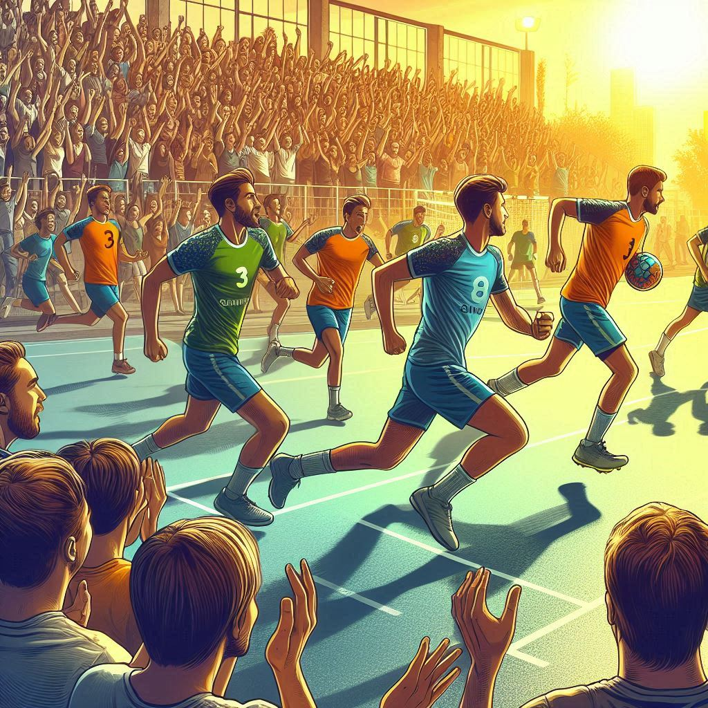
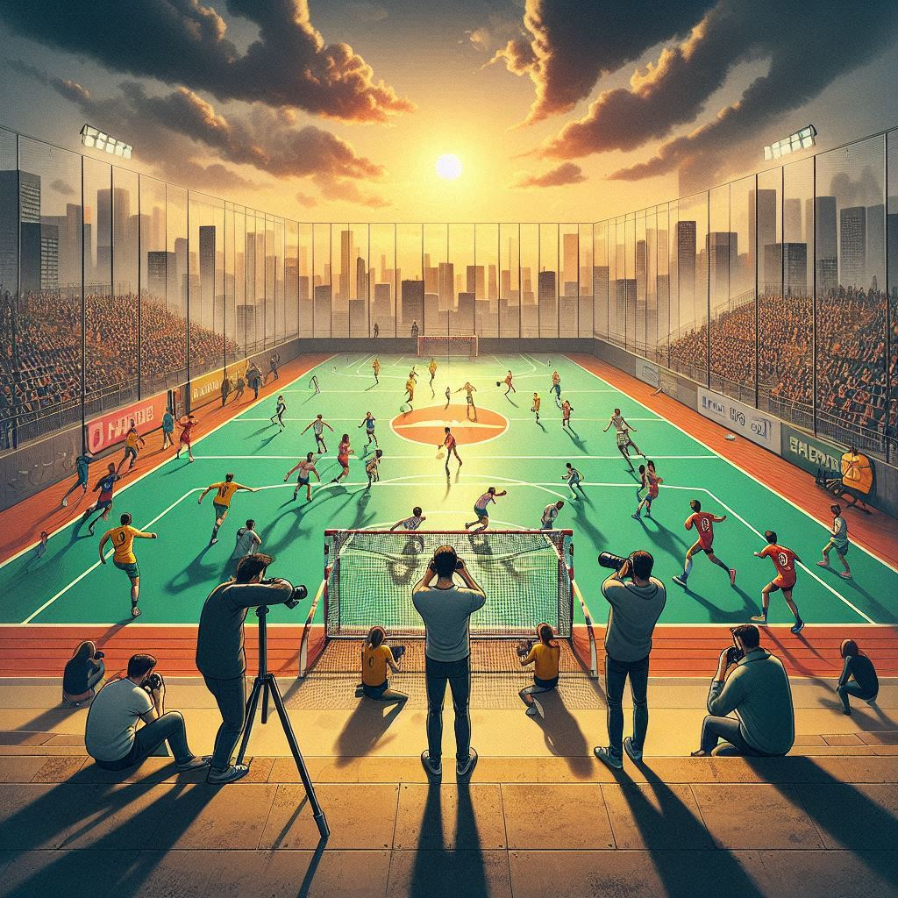

Bienvenidos al Club de Balonmano Sergio
El Club de Balonmano Sergio es más que un equipo, es una familia que se ha consolidado a lo largo de los
años. Fundado con la misión de promover el balonmano en nuestra comunidad, hemos crecido hasta convertirnos
en uno de los clubes más destacados de la región, gracias a la dedicación de nuestros jugadores,
entrenadores y seguidores.
Nuestro objetivo principal es desarrollar el talento de nuestros jugadores, fomentar los valores del deporte
y crear un espacio donde todos puedan disfrutar y aprender. ¡Sigue leyendo para conocer más sobre nuestras
actividades, eventos y las últimas noticias del club!
Nuestra Historia
Desde su fundación, el Club de Balonmano Sergio ha participado en numerosas competiciones, logrando grandes
victorias y superando desafíos. Comenzamos como un pequeño grupo de entusiastas del balonmano y hoy somos un
referente en el ámbito local, con equipos en diferentes categorías y una sólida base de seguidores.
A lo largo de los años, hemos promovido el desarrollo de jóvenes talentos, y muchos de nuestros jugadores
han seguido carreras profesionales en el deporte. La pasión por el balonmano es el motor que impulsa cada
entrenamiento, cada partido y cada evento que organizamos. ¡Gracias a todos los que han formado parte de
esta aventura!
Noticia 1: Triunfo en el Torneo Regional
Nos complace anunciar que nuestro equipo sénior ha ganado el torneo regional de balonmano, tras una
serie de partidos llenos de emoción y competencia. La final fue intensa, con nuestros jugadores
demostrando una gran habilidad y trabajo en equipo. Este triunfo es el resultado del esfuerzo y la
dedicación de todo el club, y marca un hito importante en nuestra trayectoria. ¡Felicidades a todos los
jugadores y al cuerpo técnico!

Noticia 2: Nueva Jornada de Puertas Abiertas
El próximo mes, organizaremos nuestra jornada de puertas abiertas anual, donde invitamos a toda la
comunidad a conocer nuestras instalaciones, interactuar con los jugadores y disfrutar de actividades
deportivas. Este evento es una excelente oportunidad para que los jóvenes interesados en el balonmano
puedan unirse al club y aprender más sobre este emocionante deporte. ¡Te esperamos para que formes parte
de nuestra gran familia!

Noticia 3: Renovación de Instalaciones
Nos complace anunciar que hemos completado la renovación de nuestras instalaciones. El campo de juego
ahora cuenta con una nueva superficie de última generación que mejorará la experiencia de nuestros
jugadores y reducirá el riesgo de lesiones. Además, hemos actualizado el equipamiento para garantizar
que nuestros equipos tengan todo lo necesario para entrenar y competir al más alto nivel. ¡Gracias a
todos los que han apoyado este proyecto!